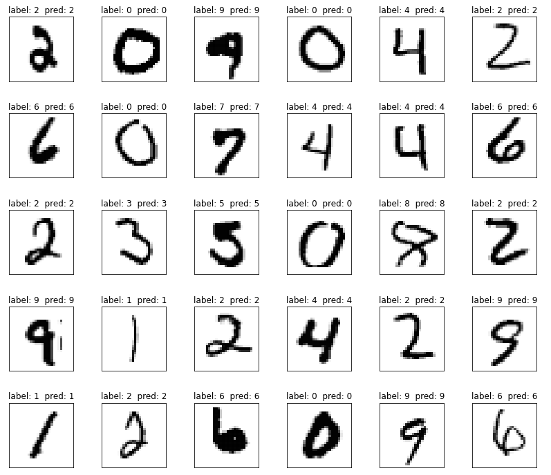

Image Classification
This is a complete example of training an image classification model on the MNIST handwritten digit dataset.
These interactive notebooks follow the steps of this example:
- Ludwig CLI:

- Ludwig Python API:
Download the MNIST dataset¶
MNIST is a collection of gray-scale images of handwritten digits. This collection is made up of 60,000 images for training and 10,000 images for testing model performance. Each image is 28 X 28 pixels in gray-scale.
ludwig datasets download mnist
This command will create a dataset mnist_dataset.csv in the current directory. In addition, there will be directories training/ and testing/ containing the images.
The columns in the dataset are
| column | description |
|---|---|
| image_path | file path string for the image |
| label | single digit 0 to 9 indicating what digit is shown in the image |
| split | integer value indicating a training example (0) or test example (2) |
from ludwig.datasets import mnist
# Loads the dataset as a pandas.DataFrame
train_df, test_df, _ = mnist.load(split=True)
train_df contains file path information to the 60K training images. test_df has same information for the 10K test images.
| column | description |
|---|---|
| image_path | file path string for the image |
| label | single digit 0 to 9 indicating what digit is shown in the image |
Sample of images with label.

Train¶
The Ludwig configuration file describes the machine learning task. This example only uses a small subset of the options provided by Ludwig. Please refer to the Configuration Section for all the details.
First it defines the input_features. For the image feature, the configuration specifies the type of neural network architecture to encode the image. In this example the encoder is a two layer Stacked Convolutional Neural Network followed by a fully connected layer with dropout regularization.
Next the output_features are defined. In this case, there is only one output feature called label. This is a categorical feature that indicates the digit the image represents, 0, 1, 2, ..., 9.
The last section in this configuration file describes options for how the the trainer will operate. In this example the trainer will process the training data for 5 epochs.
# config.yaml
input_features:
- name: image_path
type: image
encoder:
type: stacked_cnn
conv_layers:
- num_filters: 32
filter_size: 3
pool_size: 2
pool_stride: 2
- num_filters: 64
filter_size: 3
pool_size: 2
pool_stride: 2
dropout: 0.4
fc_layers:
- output_size: 128
dropout: 0.4
output_features:
- name: label
type: category
trainer:
epochs: 5
# create Ludwig configuration dictionary
config = {
'input_features': [
{
'name': 'image_path',
'type': 'image',
'preprocessing': {'num_processes': 4},
'encoder': {
'stacked_cnn',
'conv_layers': [
{'num_filters': 32, 'filter_size': 3, 'pool_size': 2, 'pool_stride': 2},
{'num_filters': 64, 'filter_size': 3, 'pool_size': 2, 'pool_stride': 2, 'dropout': 0.4}
],
'fc_layers': [{'output_size': 128, 'dropout': 0.4}]
}
}
],
'output_features': [{'name': 'label', 'type': 'category'}],
'trainer': {'epochs': 5}
}
# Constructs Ludwig model from config dictionary
model = LudwigModel(config, logging_level=logging.INFO)
Train the model.
ludwig train \
--dataset mnist_dataset.csv \
--config config.yaml
# Trains the model. This cell might take a few minutes.
train_stats, preprocessed_data, output_directory = model.train(dataset=train_df)
Evaluate¶
Evaluate the trained model.
ludwig evaluate --model_path results/experiment_run/model \
--dataset mnist_dataset.csv \
--split test \
--output_directory test_results
# Generates predictions and performance statistics for the test set.
test_stats, predictions, output_directory = model.evaluate(
test_df,
collect_predictions=True,
collect_overall_stats=True
)
Visualize Metrics¶
Display Confusion Matrix and Class Entropy plots.
ludwig visualize confusion_matrix command
ludwig visualize --visualization confusion_matrix \
--ground_truth_metadata results/experiment_run/model/training_set_metadata.json \
--test_statistics test_results/test_statistics.json \
--output_directory visualizations \
--file_format png
visualize.confusion_matrix() function
# Visualizes confusion matrix, which gives an overview of classifier performance
# for each class.
from ludwig.visualize import confusion_matrix
confusion_matrix(
[test_stats],
model.training_set_metadata,
'label',
top_n_classes=[5],
model_names=[''],
normalize=True,
)

Display Learning Curves plots.
ludwig visualize learning_curves command
ludwig visualize --visualization learning_curves \
--ground_truth_metadata results/experiment_run/model/training_set_metadata.json \
--training_statistics results/experiment_run/training_statistics.json \
--file_format png \
--output_directory visualizations
visualize.learning_curves() function
# Visualizes learning curves, which show how performance metrics changed over
# time during training.
from ludwig.visualize import learning_curves
learning_curves(train_stats, output_feature_name='label')

Predictions¶
Generate predictions from test dataset.
ludwig predict --model_path results/experiment_run/model \
--dataset mnist_dataset.csv \
--split test \
--output_directory predictions
predictions, output_directory = model.predict(test_df)
Sample test images displaying true("label") and predicted("pred") labels. 